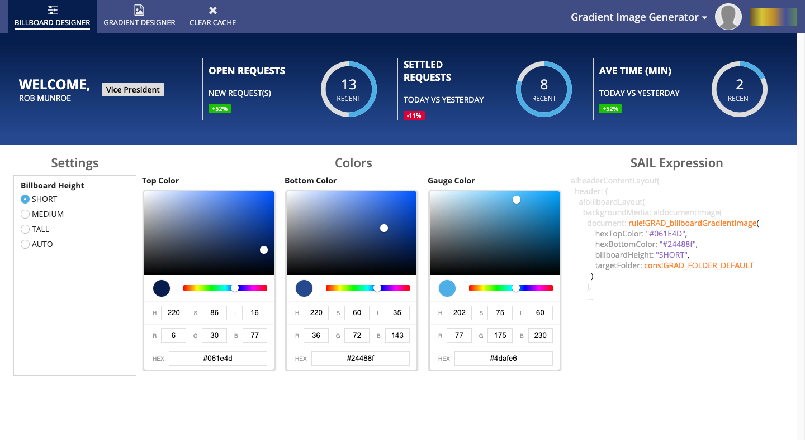

Companion Application¶
The companion application features 2 Expression Rules and a Site that are of most interest.
Expression Rules¶
GRAD_linearGradientImage()¶
This Expression Rule simply wraps around the linearGradientImage() function, accepting the same arguments and passing them to the plugin.
The reason it exists is that the Appian Interface Designer’s Design Mode will throw an error for any Interface that directly references linearGradientImage(). This only occurs in Design Mode, so this rule can be bypassed if you plan to only use Expression Mode in the Interface Designer.
It is recommended that you use this Expression Rule in any interface referencing the plugin as future enhancements to the plugin and companion application can gracefully handle changes.
GRAD_billboardGradientImage()¶
This Expression Rule provides simplified arguments that are suitable for a Billboard Layout component’s backgroundMedia value, providing sensible and aesthetically pleasing defaults.
The gradients produced will always be vertically oriented and will include a 10% top color buffer before beginning the gradient. This looks best when using a Site with a Selected Tab Background Color the same as the hexTopColor value, as seen below.

hexTopColor (Text): The top color of the gradient
hexBottomColor (Text): The bottom color of the gradient
billboardHeight (Text): The same value set for the Billboard Layout’s height property, e.g. SHORT or AUTO
customWidth (Number (Integer)): If billboardHeight is set to AUTO, this is the width in pixels of the generated image
customHeight (Number (Integer)): If billboardHeight is set to AUTO, this is the height in pixels of the generated image
targetFolder (Folder): An Appian Folder where the generated image is to be stored. If left blank, defaults to cons!GRAD_FOLDER_DEFAULT.
Example¶
a!headerContentLayout(
header: {
a!billboardLayout(
backgroundMedia: a!documentImage(
document: rule!GRAD_billboardGradientImage(
hexTopColor: "#4c3006",
hexBottomColor: "#8f4b24",
billboardHeight: "SHORT",
targetFolder: cons!GRAD_FOLDER_DEFAULT
)
),
backgroundColor: "#000000",
marginBelow: "NONE",
overlay: a!fullOverlay(
contents: {
rule!GRAD_Interface_DefaultBillboardOverlayContent(
gaugeFillColor: "#e6a84c"
)
},
alignVertical: "MIDDLE",
style: "NONE"
)
)
},
contents: {}
)
This would produce the following Billboard:
Gradient Image Generator Site¶
The companion application includes a single Site to give further examples and help design gradients images as well as Billboard backgrounds.
Billboard Designer¶
This page of the Site allows you to experiment with Billboard background colors and produces a SAIL Expression snippet that you can copy and paste into your Interfaces.
Simply change the values of the Billboard Height, Top Color, and Bottom Color to alter the Billboard’s background.
Gradient Designer¶
This page of the Site allows you much finer-grained control over gradient image generation.
To begin click on a gradient in the Sample Color Palettes, or simply modify the default gradient provided. As you make changes to the Settings and Gradient Colors, the resulting image will appear below, and the SAIL Expression snippet will update, allowing you to copy and paste into your Interfaces.
Settings¶
These values will alter the orientation and size in pixels of the generated image.
Gradient Colors¶
This is the list of colors, either top to bottom if the orientation is Vertical, or left-to-right if Horizontal.
To edit a color, click the pencil icon next to the color hex code. This will display a color picker allowing you to alter the color. When done, click the checkmark to hide the color picker.
{kind=link}
To adjust where the color is positioned in the gradient, select a value from the Distribution dropdown. Note that you can only select values that differ from the existing colors, so you may need to alter another color’s to position first.
{kind=link}
To remove the color from the gradient, click the X icon.
To add a new color, click the Add Color link.
To reverse the order of the colors in the gradients (but keeping the distribution percentages the same) click the Reverse Color Order link.
SAIL Expression¶
This section produces a snippet of SAIL that can be pasted anywhere in your application that accepts a Document, including a!documentImage().
Gradient Image Preview¶
This image is the result of the selected values in the designer. To download the PNG file, simply click on the image.
Clear Cache¶
This page is the start form for a process that will delete all images in the Default Image Folder, which is where the designer UIs store the generated images.
Note
If you delete an image created by this application, reloading Interfaces that still reference the plugin (e.g. reloading the Site and designer pages) will regenerate the gradient images.